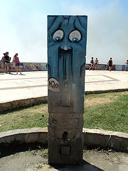
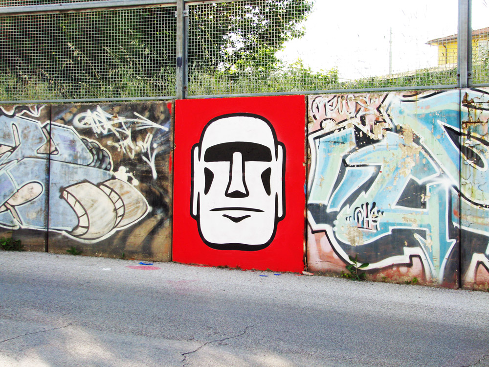
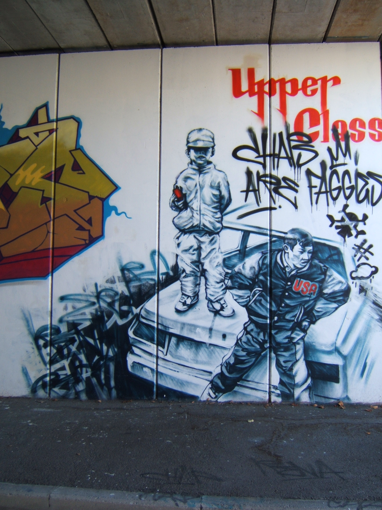
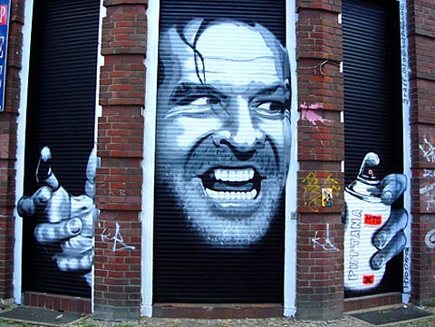

STORIA DELLA GRAFFIT ART
graffitismo:L'arte, la tecnica dell'eseguire graffiti. Movimento artistico sviluppatosi negli Stati Uniti d'America
negli anni Ottanta del Novecento, i cui esponenti realizzavano pitture murali con vernice spray
Le origini

L'origine del graffittismo si puó far risalire ai primi anni 70 quando TAKI 183, insieme a Rammellzee, apre la strada a questa corrente ed allo sviluppo
dell'Aerosol-art a New York. Un esempio italiano é Carlo Torrighelli, meglio noto come C.T. (1909-1983), che opera a Milano sempre negli anni '70, nella
zona di Parco Sempione.
Nel 1972-75 appaiono i primi "pezzi", rappresentanti inizialmente una semplice evoluzione delle firme, divenute piú grandi, piú spesse e con i primi esempi di riempimento e di contorno (outline). Ben presto, anche se un pezzo aveva bisogno di molto spray (due o piú bombolette) che avrebbero permesso di fare molte tag, tutti i writer raccolsero la sfida lanciata da Super Kool 223 e cominciarono a fare pezzi. Iniziarono le prime repressioni e le campagne contro il graffitismo. Le carrozze della metro vengono pulite e lavate, si mettono taglie sui writers, si recintano i depositi della metro (luoghi preferiti per l'azione) e si piazzano pattuglie cinofile lungo le recinzioni. Nonostante ció tra i graffitisti c'era una continua sfida, che portó all'evoluzione ed al miglioramento qualitativo del fenomeno, che prese ad ampliarsi. Alcuni writer inventarono nuovi stili (come loop o nuvole) o perfezionarono quelli già esistenti, aggiungendo sfondi, grazie di provenienza tipografia, personaggi di cartoni animati (puppets) e forme prese dalla segnaletica stradale o dalla logotipia. I pezzi si ingrandirono top-to-bottom wholecar, diventando piú elaborati e colorati Wild Style.
Nei primi anni ottanta, anche grazie alla realizzazione di Style Wars (documentario sui graffiti della
metropolitana newyorchese) e del film Wild Style, il fenomeno graffiti si diffuse su scala mondiale, trovando in Europa un fertile terreno.
indice
Nel 1972-75 appaiono i primi "pezzi", rappresentanti inizialmente una semplice evoluzione delle firme, divenute piú grandi, piú spesse e con i primi esempi di riempimento e di contorno (outline). Ben presto, anche se un pezzo aveva bisogno di molto spray (due o piú bombolette) che avrebbero permesso di fare molte tag, tutti i writer raccolsero la sfida lanciata da Super Kool 223 e cominciarono a fare pezzi. Iniziarono le prime repressioni e le campagne contro il graffitismo. Le carrozze della metro vengono pulite e lavate, si mettono taglie sui writers, si recintano i depositi della metro (luoghi preferiti per l'azione) e si piazzano pattuglie cinofile lungo le recinzioni. Nonostante ció tra i graffitisti c'era una continua sfida, che portó all'evoluzione ed al miglioramento qualitativo del fenomeno, che prese ad ampliarsi. Alcuni writer inventarono nuovi stili (come loop o nuvole) o perfezionarono quelli già esistenti, aggiungendo sfondi, grazie di provenienza tipografia, personaggi di cartoni animati (puppets) e forme prese dalla segnaletica stradale o dalla logotipia. I pezzi si ingrandirono top-to-bottom wholecar, diventando piú elaborati e colorati Wild Style.
Nei primi anni ottanta, anche grazie alla realizzazione di Style Wars (documentario sui graffiti della
metropolitana newyorchese) e del film Wild Style, il fenomeno graffiti si diffuse su scala mondiale, trovando in Europa un fertile terreno.
indice
Stencil Graffiti

Le espressioni di origine inglese "stencil graffiti" (in italiano talvolta resa come "graffiti stencil", "graffiti a stencil" e simili) e "stencil art" si
riferiscono a untipo di graffiti ottenuti per mezzo di uno stencil (maschera normografica) attraverso cui viene spruzzata vernice spray. In alcuni
casi una immagine é realizzata usando piú stencil e diversi colori. La maschera é realizzata tramite il taglio di alcune sezioni della superficie
del materiale (ad esempio un foglio di cartoncino) per formare un negativo fisico dell'immagine che si vuole creare. Applicando della vernice o del
pigmento sulla maschera, la forma ritagliata verrà impressa sulla superficie retrostante lo stencil, in quanto il colore passerà solo attraverso le sezioni
asportate. Il principale limite dello stencil é il fatto che non permette la creazione di figure isolate all'interno dell'immagine. L'espediente a cui si deve ricorrere é l'uso di ponti che collegano la figura isolata al resto della maschera.
Ogni stencil permette di creare una forma di un unico colore, quindi per creare immagini a piú colori é necessario creare una maschera appositamente realizzata per ogni colore che si vuole utilizzare, applicandole in fasi successive sulla stessa superficie.
Rispetto ad altre forme di graffiti writing e di street art, lo stencil consente una esecuzione piú veloce e permette di riprodurre una stessa identica immagine in un qualsiasi numero di copie. Questi elementi ne fanno una tecnica di tagging e tag bombing particolarmente efficace.
indice
Tag e crew

In alcuni casi la tag é seguito da un suffisso (molto comune il suffisso "one"). I primi writer usavano unire un numero al nome, come fece Julio 204 per primo, indicando con il numero la strada nel quartiere in cui viveva (204th street), imitato poi dal piú celebre Taki 183, che spinse il suo nome oltre i confini del proprio quartiere. L'elaborazione della tag puó seguire lo stesso percorso stilistico che intraprende un calligrafo nella definizione della propria calligrafia, con l'aggiunta di grazie o svolazzi, oppure semplicemente rappresentare lo stile personale del proprio autore. Quello che agli occhi di un profano potrebbe sembrare un semplice scarabocchio é per la maggior parte dei writer il frutto di un esercizio costante nel tentativo di coniugare estetica e rapidità.
Una crew é un gruppo, spesso composto da amici, legati dal writing ma non solo ed esclusivamente da questo. Sinonimi sono il francesismo "clique", lo slang bolognese "ballotta", gli inglesi "connection" e "squad" (mutuato dal linguaggio militare). Nella crew é sicuramente importante la stima e il rispetto reciproco tra i suoi componenti, non mancano comunque raggruppamenti fatti ad hoc, come i "TFP" di Cope2: potevano rientrare tra i "The Fantastic Partners" solamente i migliori studenti dell'ambiente newyorkese, che dimostrassero di essere "king", re incontrastati, in materia di writing.
Il nome di una crew viene scelto in base agli interessi del gruppo di amici, generalmente accordandosi sulla connotazione che si vuole dare alla propria, futura, immagine. Molte volte il nome di una crew é un acronimo, che puó anche avere piú di un significato, mentre il tag corrisponde alla firma o della crew o di un solo writer.
indice
L'arte di strada

Arte di strada é la definizione comunemente utilizzata per inquadrare tutte le manifestazioni artistiche compiute in spazi pubblici. A differenza del graffitismo
l'artista non vuole imporre il suo nome, ma intende creare un'opera d'arte che si contestualizzi nello spazio che la circonda, creando un impatto e interagendo
con un pubblico diversificato, che peraltro non ha scelto di visionare l'opera. Il concetto é facilmente riconducibile all'idea di performance nata negli anni
settanta, con l'aggiunta del tentativo di proporre un'opera duratura, che non sia ufficiale né richiesta.Nonostante una maggiore eterogeneità e differenze sostanziali di tecniche in gioco, la arte di strada art ha maturato nel corso degli ultimi anni una connotazione culturale propria. Le tecniche utilizzate, oltre allo spray, comprendono manifesti, adesivi, stampi, installazioni, performance.
A volte, peró, questa arte puó mutare in atti di vero e proprio vandalismo, realizzato da giovanissimi "poser" che producono solo Tag, ovvero la loro illeggibile e non artistica firma. Di solito i "graffitisti", piú preparati artisticamente o piú consapevoli del proprio talento, si dimostrano invece rispettosi nello scegliere il supporto delle loro opere, evitando in modo categorico i monumenti storici, i portoni dei palazzi, i muri delle case.
indice
Il post-graffiti

Trattasi di tendenze stilistiche che affondano le radici nella cultura del graffitismo e dell'arte di strada e che si manifestano in molteplici discipline,
quali Pittura, Scultura, Grafica, Computer grafica, Design, Illustrazione, Moda, Fotografia, Architettura, Videoarte, Calligrafia. La differenza fondamentale
fra arte di strada/graffitismo e tendenze post-graffiti si esplicita nei campi di applicazione delle produzioni dell'Artista. L'artista di strada o il
graffitista crea un'opera che si colloca in spazi pubblici seguendo un percorso creativo strutturato e finalizzato spesso alla notorietà, in concorrenza
con artisti che vengono da esperienze comuni e si esprimono con un codice simile al loro; un Artista post-graffiti si cimenta invece in discipline "convenzionali",
se non nelle Arti Maggiori, confrontandosi con creativi che non hanno una formazione e impostazione apertamente legata al gusto dei Graffiti o dell'arte di strada.
é comunque evidente come gli stilemi proposti abbiano permeato in maniera quasi subdola qualsiasi produzione rivolta ai giovani, dimostrando la forza d'impatto e la persistenza di questo genere di espressione artistica.
indice
é comunque evidente come gli stilemi proposti abbiano permeato in maniera quasi subdola qualsiasi produzione rivolta ai giovani, dimostrando la forza d'impatto e la persistenza di questo genere di espressione artistica.
indice